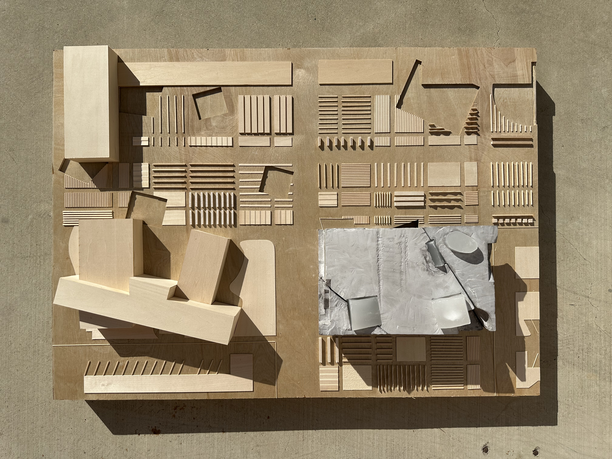
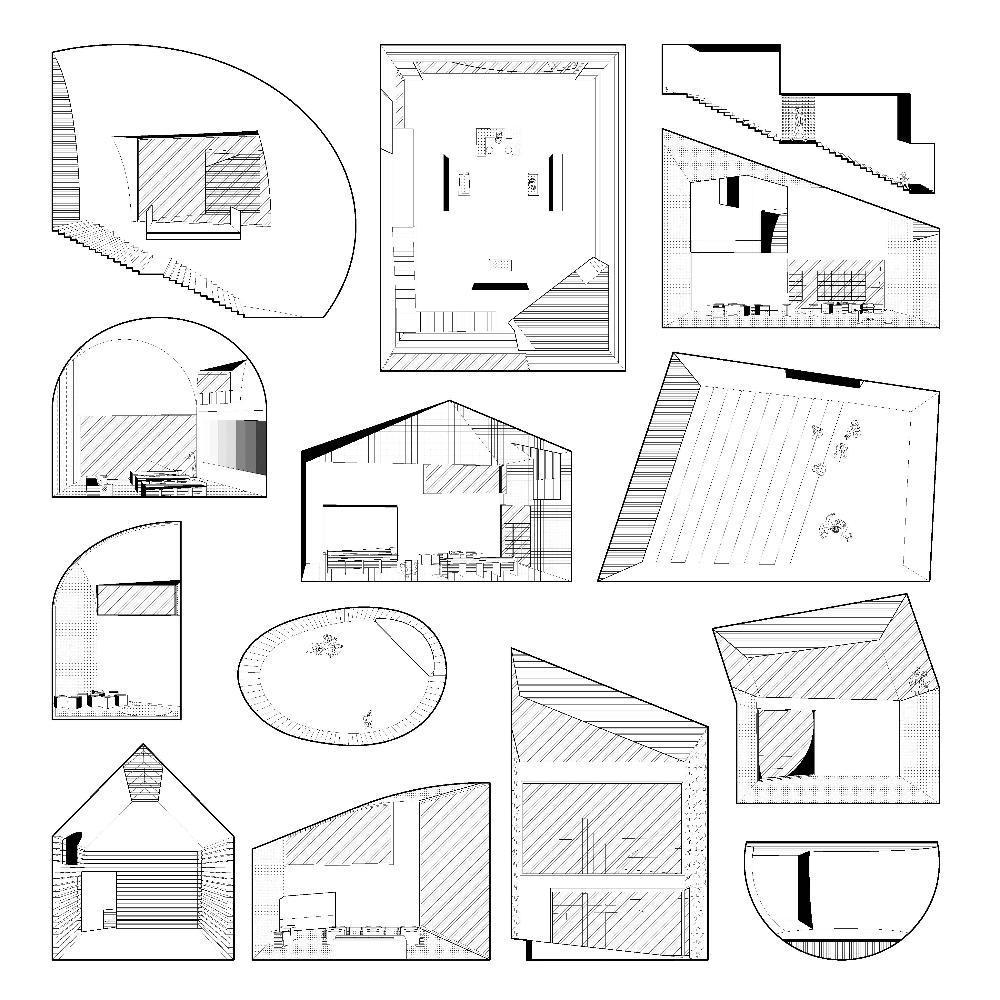
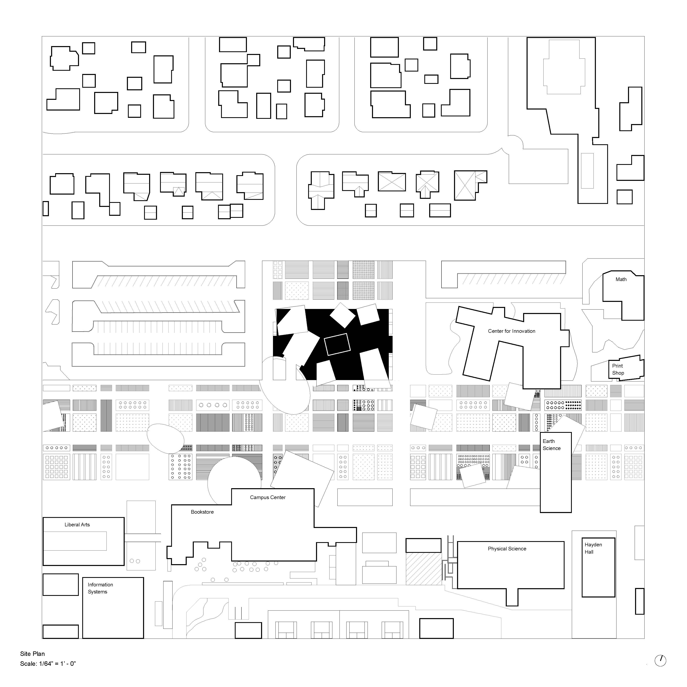
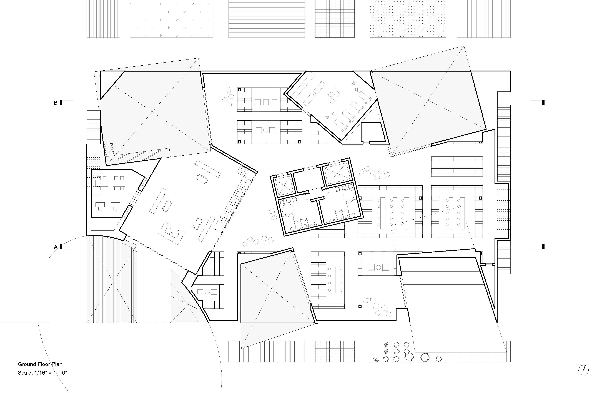
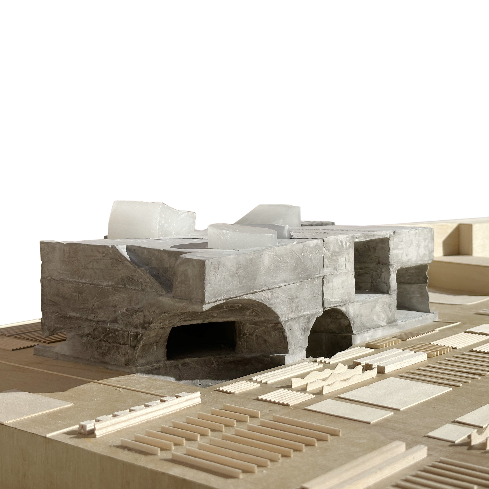
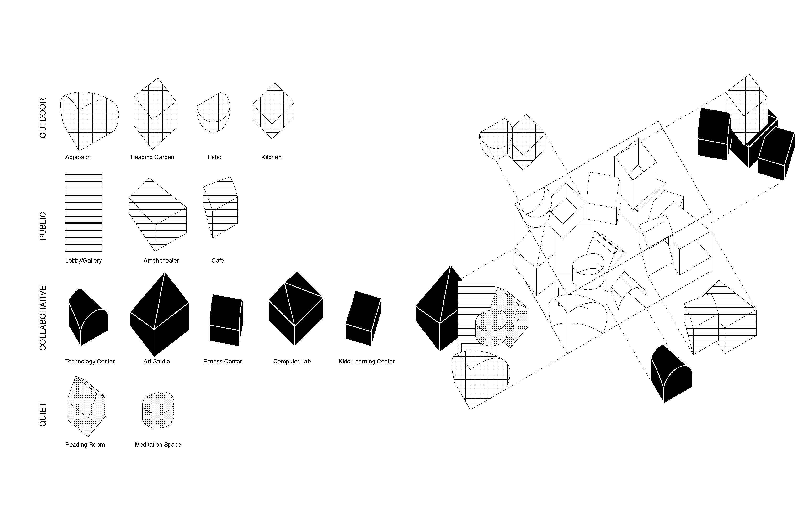
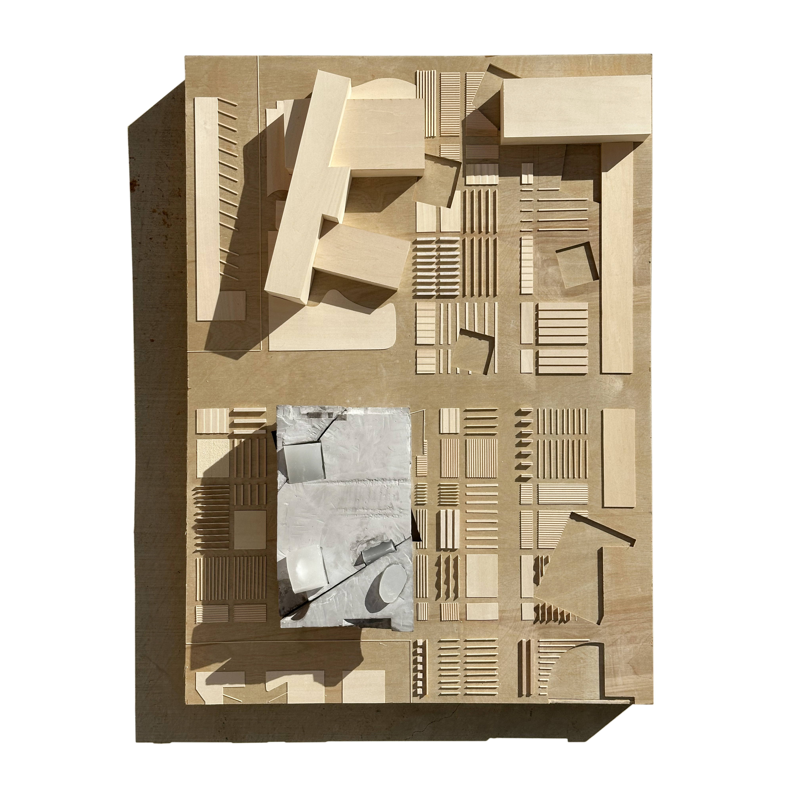
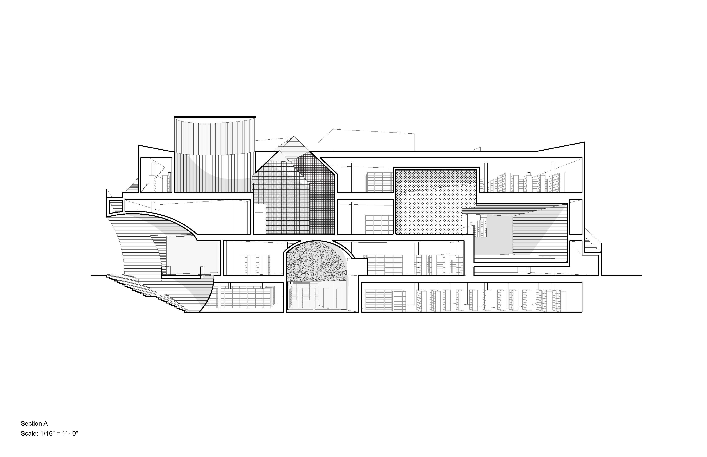

LIBRARY RESOURCE CENTER
GROUP EXHIBITION
BY NACHO POLO & ROBERT ONUSKA
APRIL 21ST – APRIL 26TH, 2026
SANTA ANA
CALIFORNIA
This page is where you slow things down and let the project speak beyond the image.






